CRVI001721Sonia Delaunay - Fashion illustration

CRVI001037 - Drawing on music staves
Cooper Hewitt, Smithsonian Design Museum, 1981-29-424
Cooper Hewitt, Smithsonian Design Museum, 1981-29-424

CRVI001861Unidentified - Graphis 118
1962
1962

CRVI000796Hannah Wilke - Untitled
Coloured pencil, pencil and graphite on paper · 45.7 × 61 cm · 1969
Coloured pencil, pencil and graphite on paper · 45.7 × 61 cm · 1969

CRVI002118Eva Hesse - Untitled
1965
1965
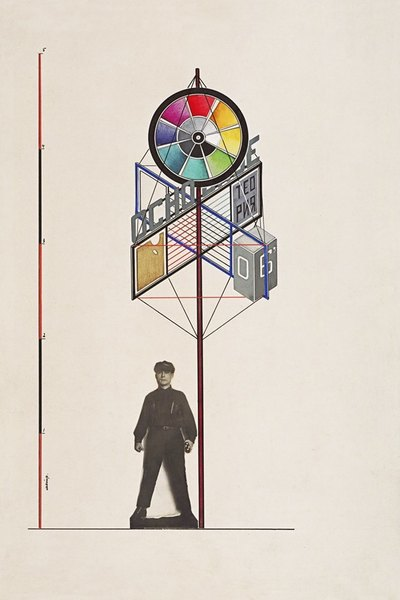
CRVI002424Gustav Klutsis - Design for an agitational stand
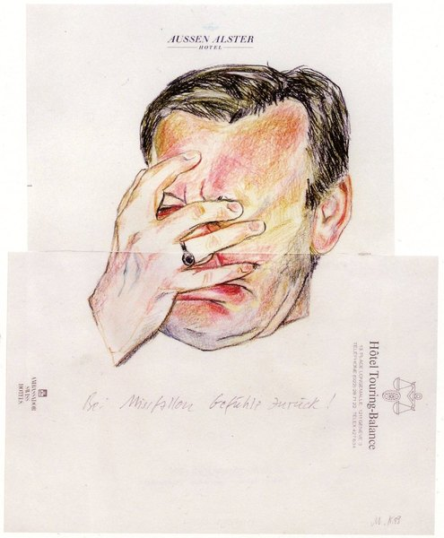
CRVI002105Martin Kippenberger - Untitled (Aussen Alster Hotel)
1985
1985

CRVI000797Hannah Wilke - Untitled
Coloured pencil and pencil on paper · 45.7 × 61 cm · 1967
Coloured pencil and pencil on paper · 45.7 × 61 cm · 1967

CRVI002252Claes Oldenburg - Alphabet/Good Humor
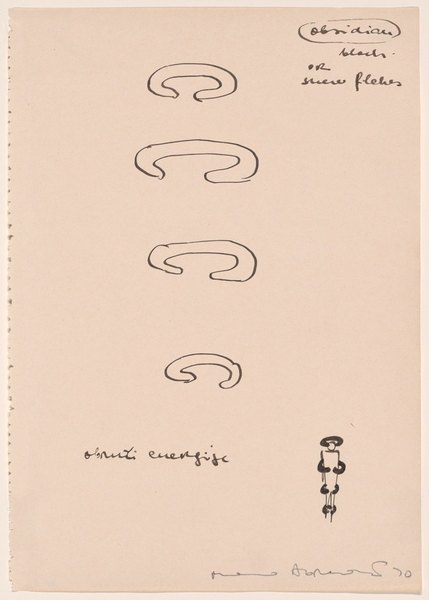
CRVI001954Marina Abramović - Untitled
1990
1990

CRVI002365Tauba Auerbach - Untitled (The Whole Alphabet, From the Center Out)

CRVI001872Agnes Martin - Aspiration
1960
1960

CRVI001863Donald Judd - Untitled (drawing)
1963
1963
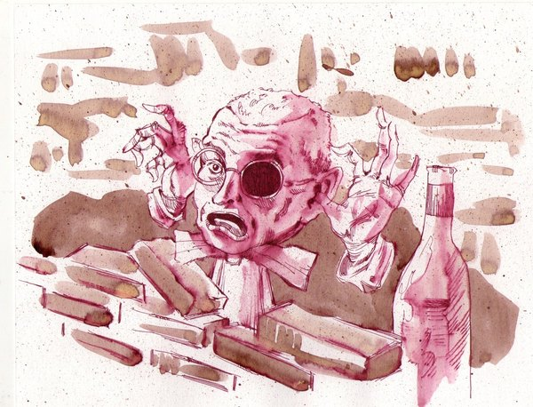
CRVI001856Unidentified - Caricature of a man with a bottle

CRVI002384Dick Higgins - Graphis No. 82
1960
1960

CRVI001359Eva Hesse - Untitled
Pen and black ink on printed, ivory wove graph paper · 27.8 × 21.5 cm · 1967
Pen and black ink on printed, ivory wove graph paper · 27.8 × 21.5 cm · 1967
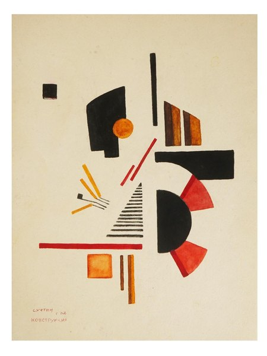
CRVI001516Ilya Chashnik - Suprematist composition
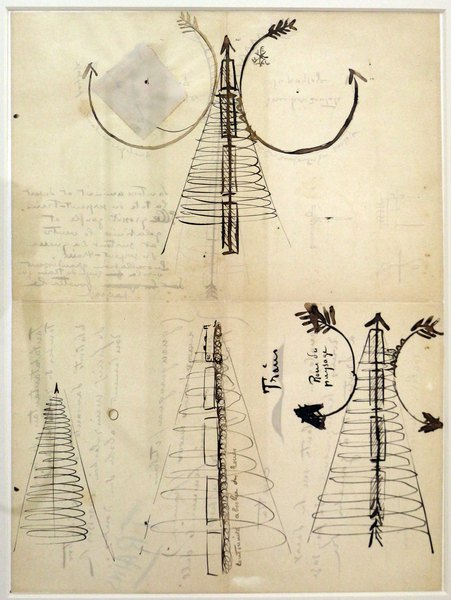
CRVI002413Filippo Tommaso Marinetti - Treni (parole in libertà)
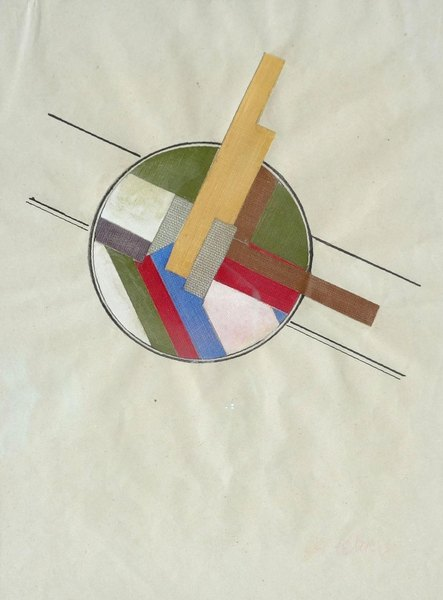
CRVI002426Gustav Klutsis - Suprematist Composition
1919
1919
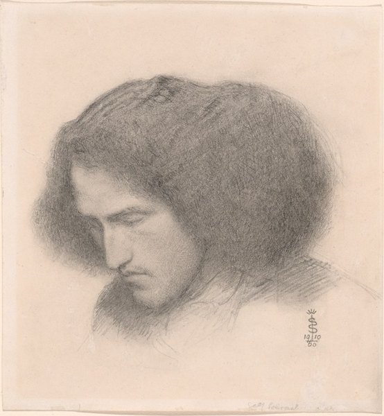
CRVI001465Simeon Solomon - Self-Portrait
1860
1860
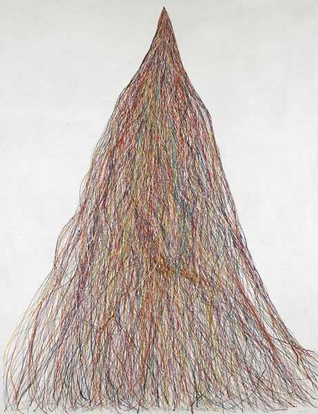
CRVI001789Michio Yoshihara - Untitled
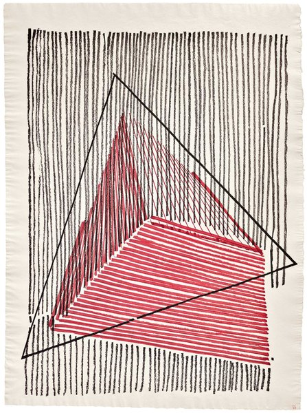
CRVI002164Gego - Sin título
1966
1966
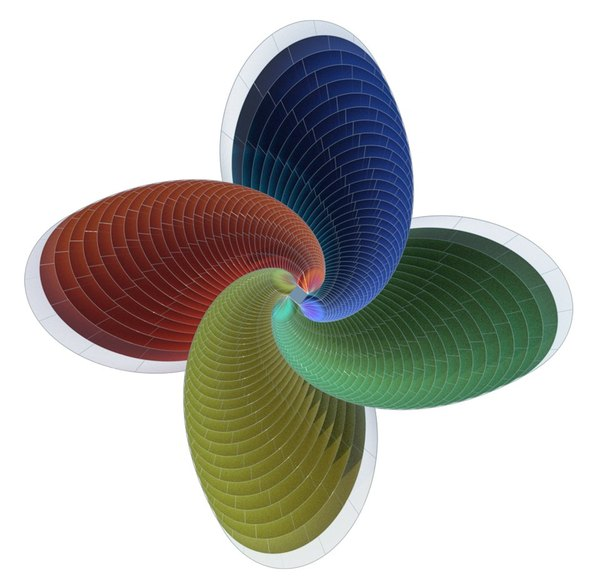
CRVI001767Unidentified - Parametric model after Itten's Tower of Fire

CRVI002171Nasreen Mohamedi - Untitled
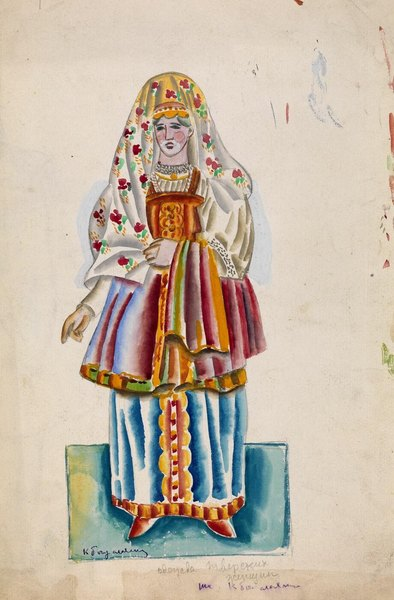
CRVI001739Ksenia Boguslavskaya - Costume design: dress of Tver women
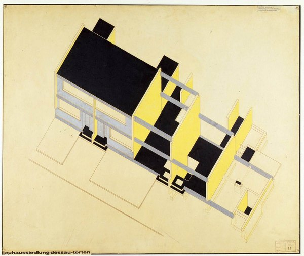
CRVI002244unattributed - Bauhaussiedlung Dessau-Törten, axonometric

CRVI001860Unidentified - Score with painted blots

CRVI002464Eric Yahnker - The Delivery of St. Teresa
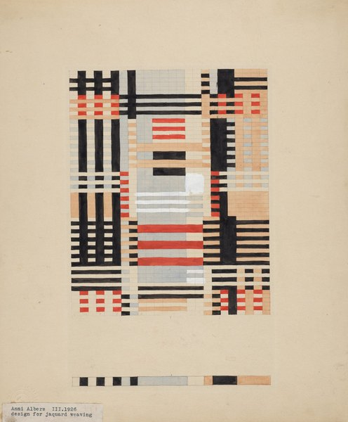
CRVI001763Anni Albers - Design for a Jacquard Weaving
1926
1926

CRVI001756László Moholy-Nagy - Pneumatik
1924
1924

CRVI002369Dick Higgins - Symphony #269 from The Thousand Symphonies
1968
1968

CRVI002462Eric Yahnker - A painter copying a portrait of Colin Kaepernick
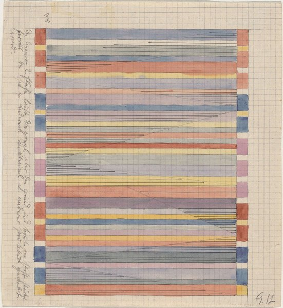
CRVI002237unattributed - Weaving design on graph paper

CRVI001907Mel Bochner - Portrait of Eva Hesse
1966
1966

CRVI001926Anselm Kiefer - Winter Landscape
1970
1970
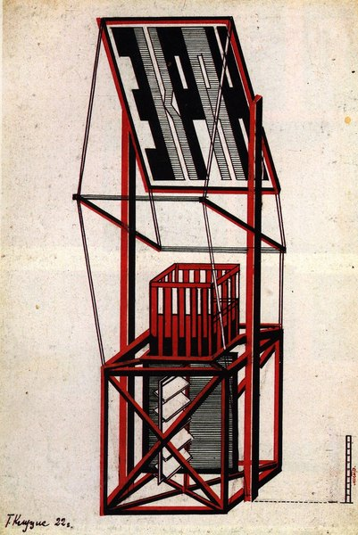
CRVI001500Gustav Klutsis - Design for a screen-tribune kiosk
1922
1922

CRVI001447Unidentified - Architectural rendering of a Secession-style building

CRVI002465Eric Yahnker - Balloon Ride

CRVI001601Charles Angrand - End of the Harvest
c. 1892–1905
c. 1892–1905

CRVI002221Anni Albers - Design for a 1926 unexecuted wall hanging
1926
1926
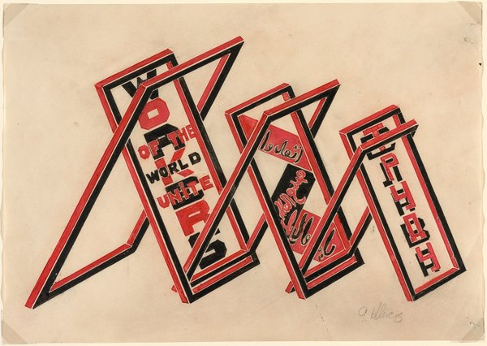
CRVI002425Gustav Klutsis - Propaganda Stand (Workers of the World Unite)
1922
1922

CRVI002275Agnes Martin - Untitled
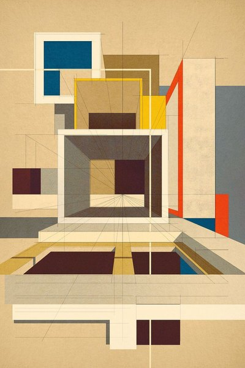
CRVI001749Unidentified - Axonometric of a modernist house

CRVI002115Philip Guston - Untitled

CRVI001736Mikhail Larionov - Le Paon
Costume design
Costume design

CRVI001544Lois Mailou Jones - Textile Design

CRVI002461Eric Yahnker - Wrecking Ball
2014
2014

CRVI002273Agnes Martin - Untitled

CRVI001765Anni Albers - Design for Wall Hanging
1925
1925

CRVI002441Zeke Clough - Yellow figure among machine parts
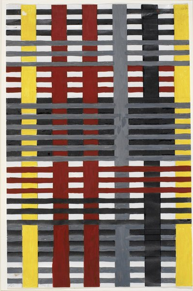
CRVI002222Anni Albers - Unfinished study
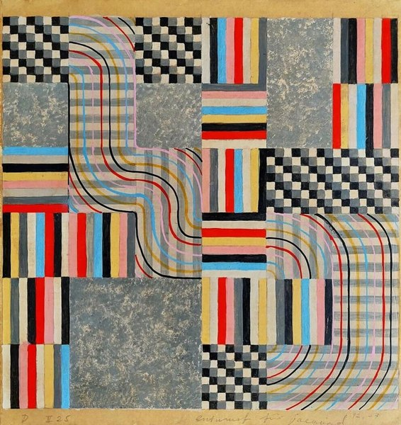
CRVI002219Anni Albers - Design 11/25 for Jacquard
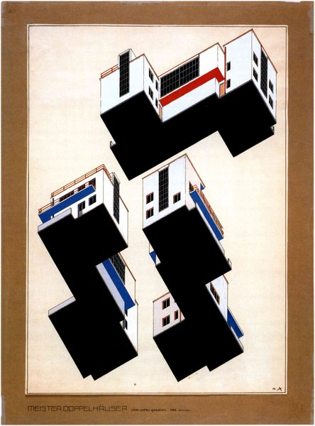
CRVI001752Walter Gropius - Bauhaus Master Houses, Dessau: isometric site plan
1925–1926
1925–1926

CRVI002463Eric Yahnker - Barack Obama placing a medal on Tupac Shakur
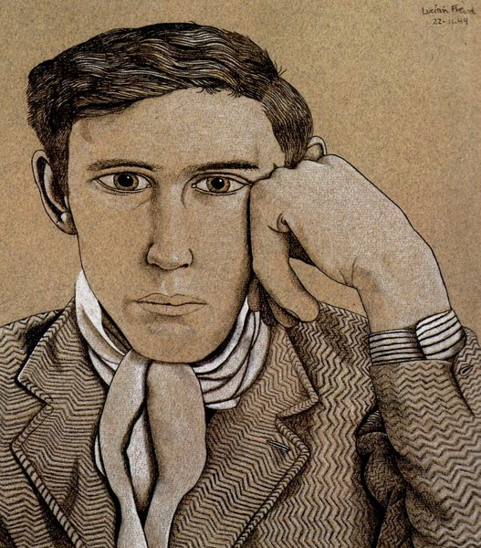
CRVI002092Lucian Freud - Portrait of a Young Man
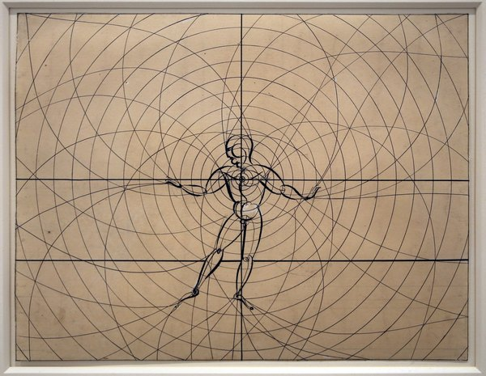
CRVI002234Oskar Schlemmer - Danza coi pali (Stäbetanz)
1928
1928
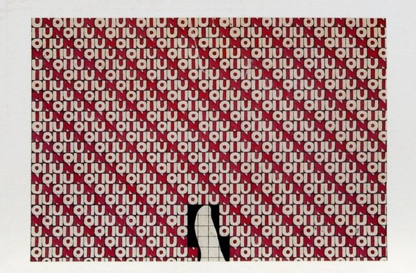
CRVI001888Alighiero Boetti - Untitled
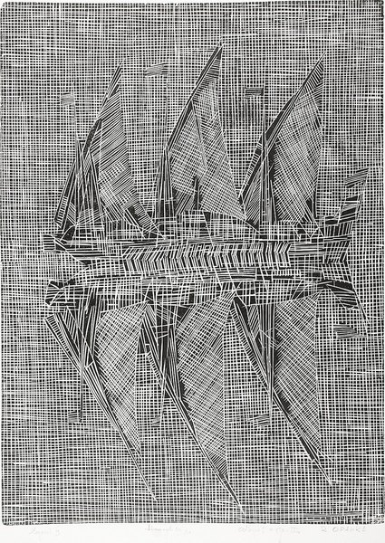
CRVI002114Tadeusz Kantor - Drawing

CRVI001358Karl Haendel - Roses (inverted and flipped)
Pencil on paper mounted on panel · 130.8 × 99.7 cm · 2023
Pencil on paper mounted on panel · 130.8 × 99.7 cm · 2023

CRVI002467Eric Yahnker - Two Kurt Cobains embracing
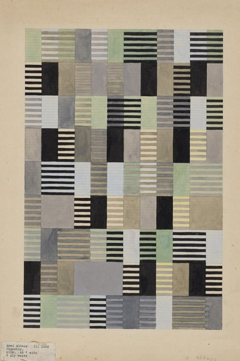
CRVI001764Anni Albers - Design for a Silk Tapestry
1926
1926
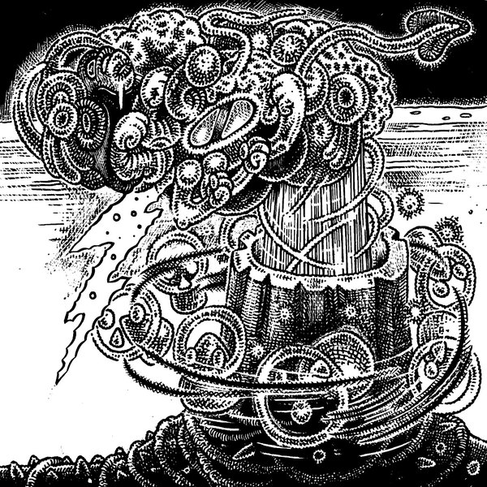
CRVI002440Zeke Clough - Black-and-white boulder of coiled forms
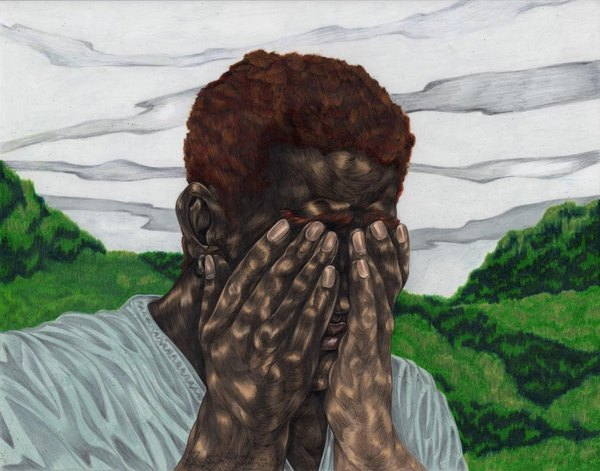
CRVI001991Toyin Ojih Odutola - As He Watched Him Walk Away
Detail · 2020
Detail · 2020

CRVI001616Charles Rennie Mackintosh - Décor de la salle à manger, House for an Art Lover, Glasgow
1901
1901

CRVI001577Charles Sheeler - Self-Portrait
1923
1923

CRVI001600Charles Angrand - Head of a Child (Emmanuel)
1898
1898

CRVI002162Mira Schendel - Untitled

CRVI002460Eric Yahnker - Factory Reset

CRVI001480Henri de Toulouse-Lautrec - May Belfort
1895
1895

CRVI001596Georges Seurat - At the Concert Parisien
1887–88
1887–88

CRVI002466Eric Yahnker - Abe Lincorn
2015
2015